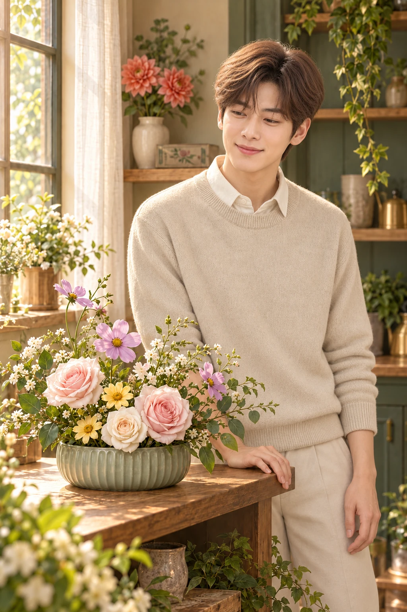

01 / 꽃을 놓으면, 작품이 되는 퍼즐
퍼즐을 풀면, 꽃이 작품이 돼요.
손님이 원하는 꽃의 색과 종류를 살피고 꽃마다 어울리는 자리를 찾아보세요. 빈칸에 꽃을 놓고 방향을 바꾸다 보면, 풀어낸 퍼즐이 하나의 꽃 작품으로 남습니다. 막힐 때는 되돌리기와 힌트로 다른 방법을 시도할 수 있어요.
DOUBLE J LABS / 출시 준비 중
손님의 부탁에 맞춰 꽃을 놓고, 완성한 작품으로 나만의 꽃집을 채워 보세요. 오늘의 꽃집은 꽃을 고르는 즐거움과 알맞은 자리를 찾는 재미를 함께 담은 꽃꽂이 퍼즐 게임입니다.
아직 출시되지 않았습니다. 출시 일정과 다운로드 링크는 이 페이지에서 안내합니다.

01 / 플레이 장면
화면은 개발 중 버전입니다. 출시 시 UI와 콘텐츠가 달라질 수 있습니다.
01 / 꽃을 놓으면, 작품이 되는 퍼즐
손님이 원하는 꽃의 색과 종류를 살피고 꽃마다 어울리는 자리를 찾아보세요. 빈칸에 꽃을 놓고 방향을 바꾸다 보면, 풀어낸 퍼즐이 하나의 꽃 작품으로 남습니다. 막힐 때는 되돌리기와 힌트로 다른 방법을 시도할 수 있어요.
02 / 빈칸에 꼭 맞게, 꽃상자를 채워요
꽃병에 꽃을 배치하고, 모양이 다른 꽃 묶음으로 꽃상자를 채워 보세요. 예약 영업에서는 들어오는 꽃을 여러 손님의 주문에 나눠 담습니다. 지금 어떤 꽃을 어디에 놓을지, 다음 주문까지 생각하는 재미가 기다려요.
03 / 내 손으로 완성한 작은 꽃 작품
마음에 드는 작품은 앨범에 보관하고 꽃집에 전시하세요. 꽃병 무늬를 바꾸거나 작품을 다듬으며 내가 좋아하는 모습을 찾아갈 수 있어요. 퍼즐의 끝에서 다음 작품을 위한 영감이 시작됩니다.
04 / 좋아하는 꽃으로 내 취향의 꽃집
완성한 꽃에 어울리는 선반과 조명, 포장 코너의 스타일을 골라보세요. 작품과 소품이 하나씩 더해질수록 꽃집에 나만의 취향이 쌓입니다.
02 / 꽃집 이야기
각자의 사연과 부탁을 안고 찾아오는 손님을 만나세요. 카페의 아침을 준비하는 은우부터 꽃에 마음을 담고 싶은 이웃까지, 한 주문씩 완성하며 꽃집의 이야기를 이어가요.
03 / 출시 및 플레이 안내
아직 출시되지 않았습니다. 출시 일정과 다운로드 링크는 이 페이지에서 안내합니다.
출시 버전에는 광고와 선택형 꾸미기 인앱결제가 포함될 예정입니다.